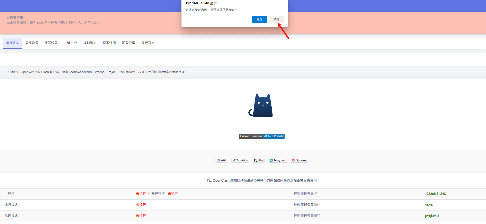

准备工作
需要有一个能够24小时开机的主机，比如在Nas或者Server上创建。
创建虚拟机
以我使用的群晖举例，首先在虚拟机的映像中选择硬盘映像，其他虚拟机大部分同理。

导入一个软路由的镜像，这里以openwrt高大全版本举例。

再回到虚拟机界面选择导入。

从硬盘映像导入。

规格默认即可。

在存储空间里选择刚刚导入的硬盘镜像。

在网卡界面选择e1000（兼容性更好些）。

其余设置默认即可，自动启动按需选择即可。
然后勾选创建完后打开虚拟机

然后回到虚拟机界面点击连接
配置软路由
命令行配置
来到以下界面后，按任意键位（只要不是系统键位都行）。

进入到以下界面

选择1，然后输入你的内网任意未被使用的IP地址，如果不确定，可以打开自己电脑的命令行窗口输入ipconfig

通常前三位就是局域网固定IP。
输入完后回车，再输入4然后会确认是否需要重启，填入y重启。
网页配置
在浏览器中输入刚才选择的IP地址，进入页面

默认无密码，进去后请先根据提示更改密码。
更改密码后来到网络接口页面

填写网关以及关闭IPV6和DHCP


然后记得保存并应用接口配置就算完成了。
魔法配置
能够使用的有很多种，以我常用的小猫咪举例。
进入后可以先不下载内核。
先进行以下更改


来到流量控制界面

来到覆写设置界面，需要把开发者选项中27行这串代码注释去掉，随后把下方自定义上游DNS服务全部取消勾选。

覆写设置的DNS设置


配置文件设置
建议先用自带电脑把clash的配置拉取过来后新建一个config.yaml文件，然后把配置信息填入进去保存后再上传（原因是因为软路由这里订阅拉取经常拉取不到，如果能够拉取可以直接填写订阅地址即可）


更新内核
如果直接在界面下载无法更新内核，这时候需要用到ssh来进行上传文件
连接ssh，如果使用高大全版本则输入9退出菜单,其他版本则忽略。

tun模式内核默认在/etc/openclash/core/clash_tun
可以使用ftp工具将文件上传至这个目录，随后重新在插件见面启动即可。
使用指南
在网络节目修改以下信息即可

所有端同理，还有进阶玩法可以不用一个个修改，不过如果软路由损坏会导致家庭网络崩溃，无特殊需求可以不部署（后续也许会出一期qwq）
疑难杂症
-
创建软路由的本体是否能够填写来进行魔法上网？
答：虽然网络上有说不可以，但以我自己实测是可以使用的
工具链接
Openwrt镜像：
- 百度网盘 提取码: 51jm
- Alist（目前仅支持IPV6）